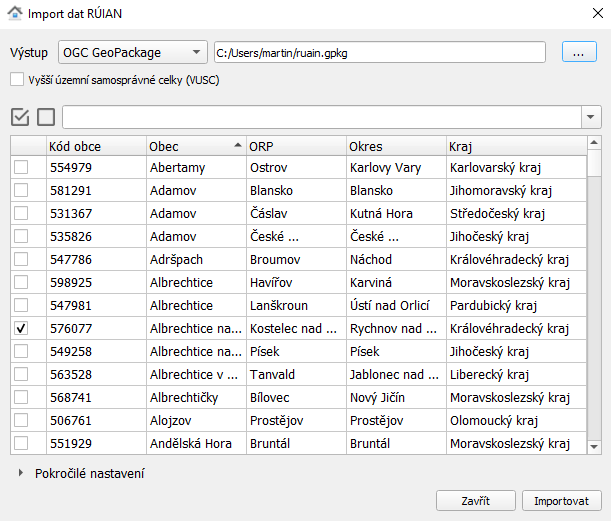

Zásuvný modul QGIS pro stahování datových vrstev RÚIAN¶
Cílem projektu je vytvoření zásuvného modulu QGIS, pomocí kterého je možné automaticky stahovat data Registru územní identifikace, adres a nemovitostí (RÚIAN) dostupných v rámci Veřejného dálkového přístupu. Grafické uživatelské rozhraní (GUI) je navrženo tak, aby uživateli nabídlo jednoduchý výběr požadovaných dat. Plugin je implementován v programovacím jazyku Python s podporou knihoven GDAL, resp. projektu GDAL-VFR (https://github.com/ctu-geoforall-lab/gdal-vfr.git) a PyQt.
Projekt navazuje na semestrální práce předmětu Free Software GIS vyučovaného na Fakultě stavební ČVUT v Praze z akademického roku 2014/1015 (https://github.com/ctu-yfsg/2015-c-qgis-vfr) a 2015/2016 (https://github.com/ctu-yfsg/2016-c-qgis-vfr).
Instalace¶
Nejprve je nutné v QGISu registrovat repositář GeoForAll ČVUT v Praze: http://geo.fsv.cvut.cz/geoforall/qgis-plugins.xml


Note
V současné době je plugin distribuován jako experimentální. V nastavení je tedy nutné aktivovat Zobrazit také experimentální zásuvné moduly.
Poté vybereme RUIAN Plugin a nainstalujeme jej.

Po instalaci se v nástrojové liště QGIS objeví nová ikonka:
Návod k použití¶
Vybereme obec či obce, které chceme naimportovat:
{kind=link}
Warning
Je vhodné zvolit menší objem dat maximálně ve velikosti okresu. Zásuvný modul není navržen pro stahování většího objemu dat.
Tip
Vyhledávat lze podle názvu obce, obce s rozšířenou působností, okresu či kraje.

V dalším kroku zvolíme formát a cestu k výstupní souboru:

Note
V současné době zásuvný modul podporuje pouze dva výstupní formáty:
Podpora pro další formáty, např. Esri Shapefile je ve vývoji.
Data můžeme v QGISu rovnou zobrazit:

Příklad vizualizace stažených dat:

Autoři¶
- Jan Klíma
- Lukáš Středa
- Šimon Gajzler
Laboratoř GeoForAll České vysoké učení technické v Praze
Supervisor: Martin Landa
Licence¶
Zdrojový kód (https://github.com/ctu-geoforall-lab/qgis-ruian-plugin) je licencován pod GNU GPL 2 a vyšší.
Hlášení chyb¶
Případné chyby hlašte na https://github.com/ctu-geoforall-lab/qgis-ruian-plugin/issues